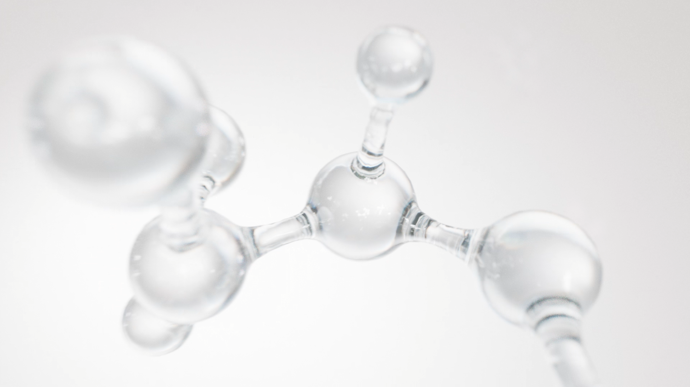
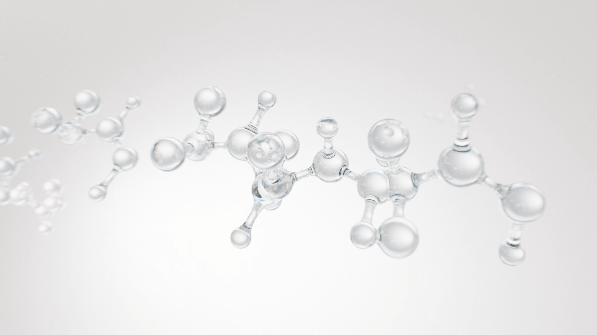
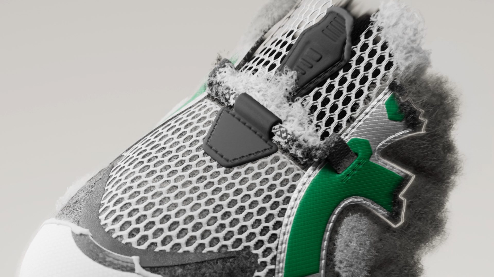
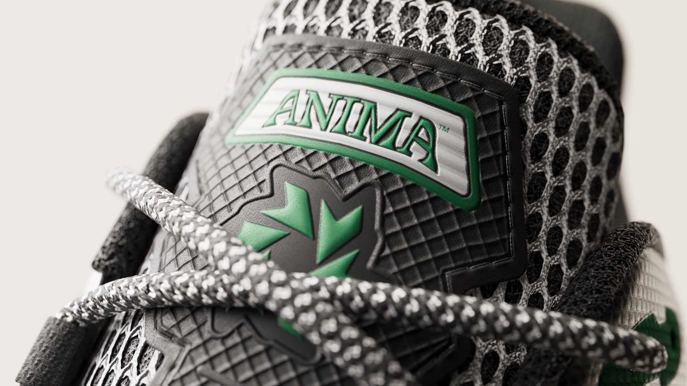
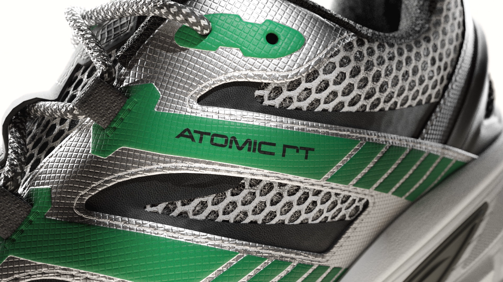
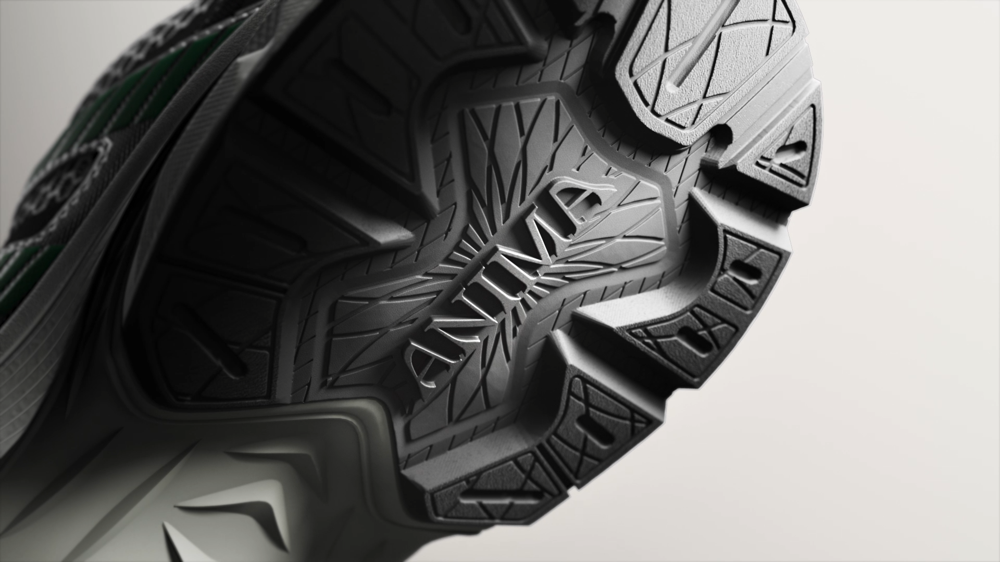
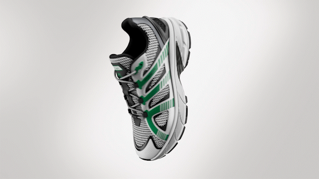

Brand Film / Simulation & FX
ANIMA 4EVERLOOP™
A brand film and simulation-driven visual project that transforms the 4EVERLOOP™ recyclable technology concept into a refined cinematic product story.
Project Film
Project Impact
Built on the trust developed through previous ASICS collaborations, this project marked my first time leading a brand concept film centered on an abstract bottle-neck recycling concept. By rebuilding the product strategy and visual narrative, the final film transformed 4EVERLOOP™ recyclable technology into a clear visual identity, gaining strong client recognition and becoming a key launch visual for the brand’s expansion into the European market.
Challenge & Execution
Visual system and style reconstruction
After taking over the project, I rapidly reorganized the visual script and motion logic, establishing a consistent material and lighting direction. The goal was to quickly stabilize the visual direction while meeting the client’s need for high-fidelity product imagery.
Complex FX concept visualization
The core challenge was to visualize the closed-loop system of plastic decomposition, transformation, and reconstruction. I designed and executed the dynamic simulation of particles transforming into fibers and finally being woven into the shoe upper, turning an abstract sustainability concept into a visually striking and commercially polished sequence.
PBR material refinement
I proactively reviewed and corrected normal and ambient occlusion data from the original 3D assets, ensuring the footwear texture remained physically accurate and high-standard under macro close-ups and strong backlighting.
Visual Breakdown
A curated sequence of simulation, material close-ups, particle transformation, and final product visuals, showing how the recyclable technology concept was translated into a cinematic brand film.










ASICS SONICBLAST™
Technical Visualization / Product Storytelling
→